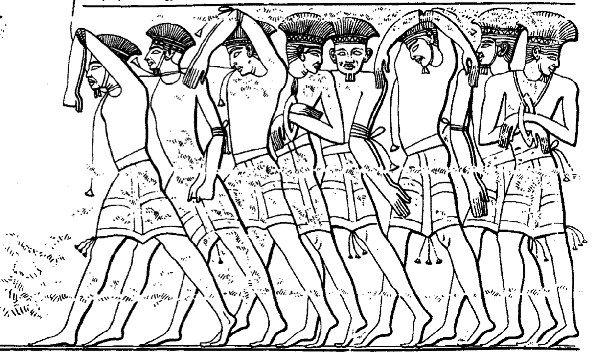
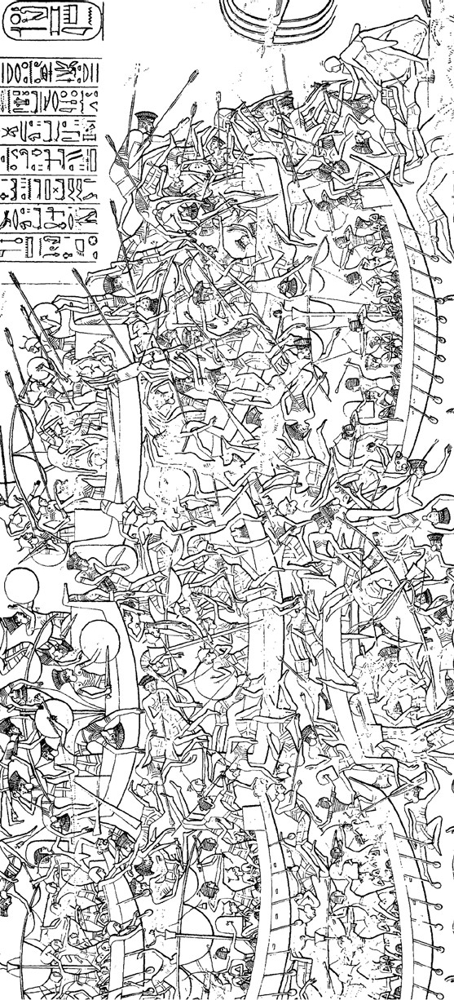
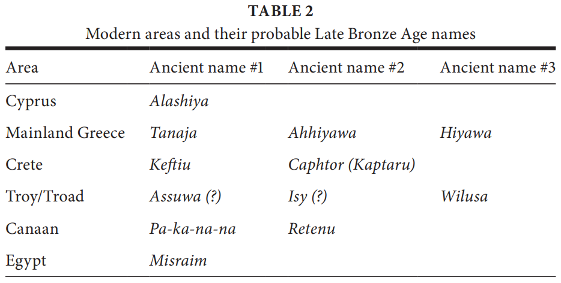

1177 B.C.
The warriors entered the world scene and moved rapidly, leaving death and destruction in their wake. Modern scholars refer to them collectively as the “Sea Peoples,” but the Egyptians who recorded their attack on Egypt never used that term, instead identifying them as separate groups working together: the Peleset, Tjekker, Shekelesh, Shardana, Danuna, and Weshesh— foreign-sounding names for foreign-looking people.[10]
We know little about them, beyond what the Egyptian records tell us. We are not certain where the Sea Peoples originated: perhaps in Sicily, Sardinia, and Italy, according to one scenario, perhaps in the Aegean or western Anatolia, or possibly even Cyprus or the Eastern Mediterranean. No ancient site has ever been identified as their origin or departure point. We think of them as moving relentlessly from site to site, overrunning countries and kingdoms as they went. According to the Egyptian texts, they set up camp in Syria before proceeding down the coast of Canaan (including parts of modern Syria, Lebanon, and Israel) and into the Nile delta of Egypt.
The year was 1177 BC. It was the eighth year of Pharaoh Ramses III’s reign.[11] According to the ancient Egyptians, and to more recent archaeological evidence, some of the Sea Peoples came by land, others by sea. There were no uniforms, no polished outfits. Ancient images portray one group with feathered headdresses, while another faction sported skullcaps; still others had horned helmets or went bareheaded. Some had short pointed beards and dressed in short kilts, either bare-chested or with a tunic; others had no facial hair and wore longer garments, almost like skirts. These observations suggest that the Sea Peoples comprised diverse groups from different geographies and different cultures. Armed with sharp bronze swords, wooden spears with gleaming metal tips, and bows and arrows, they came on boats, wagons, oxcarts, and chariots. Although I have taken 1177 BC as a pivotal date, we know that the invaders came in waves over a considerable period of time. Sometimes the warriors came alone, and sometimes their families accompanied them.[12]
According to Ramses’s inscriptions, no country was able to oppose this invading mass of humanity. Resistance was futile. The great powers of the day— the Hittites, the Mycenaeans, the Canaanites, the Cypriots, and others— fell one by one. Some of the survivors fled the carnage; others huddled in the ruins of their once-proud cities; still others joined the invaders, swelling their ranks and adding to the apparent complexities of the mob of invaders. Each group of the Sea Peoples was on the move, each apparently motivated by individual reasons. Perhaps it was the desire for spoils or slaves that spurred some; others may have been compelled by drought, famine, or population pressures to migrate eastward from their own lands in the West.
On the walls of his mortuary temple at Medinet Habu, near the Valley of the Kings, Ramses said concisely:
The foreign countries made a conspiracy in their islands. All at once the lands were removed and scattered in the fray. No land could stand before their arms, from Khatte, Qode, Carchemish, Arzawa, and Alashiya on, being cut off at [one time]. A camp [was set up] in one place in Amurru. They desolated its people, and its land was like that which has never come into being. They were coming forward toward Egypt, while the flame was prepared before them. Their confederation was the Peleset, Tjekker, Shekelesh, Danuna, and Weshesh, lands united. They laid their hands upon the lands as far as the circuit of the earth, their hearts confident and trusting.[13]
We know these places that were reportedly overrun by the invaders, for they were famous in antiquity. Khatte is the land of the Hittites, with its heartland located on the inland plateau of Anatolia (the ancient name for Turkey) near modern Ankara and its empire stretching from the Aegean coast in the west to the lands of northern Syria in the east. Qode is probably located in what is now southeastern Turkey (possibly the region of ancient Kizzuwadna). Carchemish is a well-known archaeological site first excavated almost a century ago by a team of archaeologists that included Sir Leonard Woolley, perhaps better known for his excavation of Abraham’s “Ur of the Chaldees” in Iraq, and T. E. Lawrence, who was trained as a classical archaeologist at Oxford before his exploits in World War I ultimately transformed him into Hollywood’s “Lawrence of Arabia.” Arzawa was a land familiar to the Hittites, located within their grasp in western Anatolia. Alashiya may have been what we know today as the island of Cyprus, a metal-rich island famous for its copper ore. Amurru was located on the coast of northern Syria. We shall visit all of these places again, in the pages and stories that follow.

Fig. 1. Sea Peoples portrayed as captives at Medinet Habu (after Medinet Habu, vol. 1, pl. 44; courtesy of the Oriental Institute of the University of Chicago).
The six individual groups who made up the Sea Peoples during this wave of invasion— the five mentioned above by Ramses in the Medinet Habu inscription and a sixth group, named the Shardana (also sometimes called the Sherden), mentioned in another relevant inscription— are far more shadowy than the lands that they reportedly overran. They left no inscriptions of their own and are therefore known textually almost entirely from Egyptian inscriptions.[14]
Most of these groups are also difficult to detect in the archaeological record, although archaeologists and philologists have been making a valiant attempt for much of the past century, first by playing linguistic games and then, more recently, by looking at pottery and other archaeological remains. For instance, the Danuna were long ago identified with Homer’s Danaans, from the Bronze Age Aegean. The Shekelesh are often hypothesized to have come from what is now Sicily and the Shardana from Sardinia, based in part on the consonantal similarities in each case and the fact that Ramses refers to these “foreign countries” as making a conspiracy “in their islands,” for the Shardana in particular were labeled in Ramses’s inscriptions as being “of the sea.”[15]
However, not all scholars accept these suggestions, and there is an entire school of thought which suggests that the Shekelesh and the Shardana did not come from the Western Mediterranean, but rather were from areas in the Eastern Mediterranean and only fled to the regions of Sicily and Sardinia, and gave their name to these regions, after having been defeated by the Egyptians. In favor of such a possibility is the fact that the Shardana are known to have been fighting both for and against the Egyptians long before the advent of the Sea Peoples. Against the possibility is the fact that we are later told, by Ramses III, that he settled the survivors of the attacking forces in Egypt itself.[16]
Of all the foreign groups active in this arena at this time, only one has been firmly identified. The Peleset of the Sea Peoples are generally accepted as none other than the Philistines, who are identified in the Bible (Amos 9:7; Jer. 47:4) as coming from Crete. The linguistic identification was apparently so obvious that Jean-François Champollion, the decipherer of Egyptian hieroglyphics, had already suggested it before 1836, and the identification of specific pottery styles, architecture, and other material remains as “Philistine” was begun as early as 1899 by biblical archaeologists working at Tell es-Safi, identified as biblical Gath.[17]
While we do not know with any precision either the origins or the motivation of the invaders, we do know what they look like—we can view their names and faces carved on the walls of Ramses III’s mortuary temple at Medinet Habu. This ancient site is rich in both pictures and stately rows of hieroglyphic text. The invaders’ armor, weapons, clothing, boats, and oxcarts loaded with possessions are all clearly visible in the representations, so detailed that scholars have published analyses of the individual people and even the different boats shown in the scenes.[18] Other panoramas are more graphic. One of these shows foreigners and Egyptians engaged in a chaotic naval battle; some are floating upside down and are clearly dead, while others are still fighting fiercely from their boats.
Since the 1920s, the inscriptions and scenes at Medinet Habu have been studied and exactingly copied by Egyptologists from the Oriental Institute at the University of Chicago. The institute was and still is one of the preeminent centers in the world for the study of ancient civilizations in Egypt and the Near East. James Henry Breasted founded it upon his return from an epic journey through the Near East in 1919 and 1920, with fifty thousand dollars in seed money from John D. Rockefeller, Jr. Archaeologists from the OI (as it is generally called) have excavated all over the Near East, from Iran to Egypt and beyond.

Fig. 2. Naval battle with Sea Peoples at Medinet Habu (after Medinet Habu, vol. 1, pl. 37; courtesy of the Oriental Institute of the University of Chicago).
Much has been written about Breasted and the OI projects that began under his direction, including the excavations at Megiddo (biblical Armageddon) in Israel, which lasted from 1925 to 1939. Among the most important were the epigraphic surveys that were conducted in Egypt, during which the Egyptologists painstakingly copied the hieroglyphic texts and scenes left by the pharaohs on their temples and palaces throughout Egypt. It is a tremendously tedious job to copy the hieroglyphics carved into stone walls and monuments. It involves hours of work, and transcribers are usually perched on ladders or scaffolding in the hot sun, peering at deteriorated symbols inscribed on gates, temples, and columns. Suffice it to say, the results are invaluable, especially since many of the inscriptions have suffered greatly as a result of erosion, damage by tourists, or other injuries. Were these inscriptions not transcribed, they would eventually become undecipherable to future generations. The results of the transcriptions from Medinet Habu were published in a series of volumes, the first of which appeared in 1930, with subsequent and related volumes appearing in the 1940s and 1950s.
Although scholarly debate continues, with some suggesting that the land and sea battles were separate events fought at different times and in different locations, including far to the north in the uppermost part of Canaan (northern Syria), most experts agree that the land and sea battles depicted on the walls at Medinet Habu were probably fought nearly simultaneously in the Egyptian delta or nearby. It is also possible that they represent a single extended battle that occurred both on land and at sea, and some scholars have even suggested that both represent ambushes of the Sea Peoples’ forces, in which the Egyptians caught them by surprise.[19] In any event, the end result is not in question, for at Medinet Habu the Egyptian pharaoh quite clearly states:
Those who reached my frontier, their seed is not, their heart and soul are finished forever and ever. Those who came forward together on the sea, the full flame was in front of them at the river-mouths, while a stockade of lances surrounded them on the shore. They were dragged in, enclosed, and prostrated on the beach, killed, and made into heaps from tail to head. Their ships and their goods were as if fallen into the water. I have made the lands turn back from (even) mentioning Egypt: for when they pronounce my name in their land, then they are burned up.[20]
Ramses then continues, in a famous document known as the Papyrus Harris, again naming his defeated enemies:
I overthrew those who invaded them from their lands. I slew the Danuna [who are] in their isles, the Tjekker and the Peleset were made ashes. The Shardana and the Weshesh of the sea, they were made as those that exist not, taken captive at one time, brought as captives to Egypt, like the sand of the shore. I settled them in strongholds bound in my name. Numerous were their classes like hundred-thousands. I taxed them all, in clothing and grain from the store-houses and granaries each year.[21]
This was not the first time that the Egyptians fought against a collective force of “Sea Peoples.” Thirty years earlier, in 1207 BC, during the fifth year of Pharaoh Merneptah’s reign, a similar co alition of these shadowy groups had attacked Egypt.
Merneptah is perhaps best known to students of the ancient Near East as the Egyptian pharaoh who first uses the term “Israel,” in an inscription dating to this same year (1207 BC). This inscription is the earliest occurrence of the name Israel outside the Bible. In the Pharaonic inscription, the name— written with a special sign to indicate that it is a people rather than just a place— appears in a brief description of a campaign to the region of Canaan, where the people whom he calls “Israel” were located.[22] The sentences are found within the context of a long inscription that is otherwise concerned with Merneptah’s ongoing battles with the Libyans, located just to the west of Egypt proper. It is the Libyans and the Sea Peoples who occupied most of Merneptah’s attention during this year, rather than the Israelites.
For example, in a text found at the site of Heliopolis, dated to “Year 5, second month of the third season (tenth month),” we are told, “The wretched chief of Libya has invaded [with] Shekelesh and e very foreign country, which is with him, to violate the borders of Egypt.”[23] The same wording is repeated on another inscription, known as the “Cairo Column.”[24]
In a longer inscription found at Karnak (modern-day Luxor), we are given additional details about this earlier wave of incursions by the Sea Peoples. The names of the individual groups are included:
[Beginning of the victory that his majesty achieved in the land of Libya] Eqwesh, Teresh, Lukka, Shardana, Shekelesh, Northerners coming from all lands... the third season, saying: The wretched, fallen chief of Libya... has fallen upon the country of Tehenu with his bowmen— Shardana, Shekelesh, Eqwesh, Lukka, Teresh, taking the best of e very warrior and every man of war of his country...
List of the captives carried off from this land of Libya and the countries which he brought with him...
Sherden, Shekelesh, Eqwesh of the countries of the sea, who had no foreskins:
Shekelesh 222 men
Making 250 hands Teresh 742 men
Making 790 hands
Shardana—
[Making]—
[Ek]wesh who had no foreskins, slain, whose hands were carried off, (for) they had no [foreskins]—
Shekelesh and Teresh who came as enemies of Libya—
Kehek, and Libyans, carried off as living prisoners 218 men.[25]
Several things are apparent in this inscription. First there are five groups, rather than six, who made up this earlier wave of Sea Peoples: the Shardana (aka Sherden), Shekelesh, Eqwesh, Lukka, and Teresh. The Shardana and Shekelesh are present in both this invasion and the later one during the time of Ramses III, but the other three groups are different. Second, the Shardana, Shekelesh, and Eqwesh are specifically identified as being “of the countries of the sea,” while the five groups are together described as “Northerners coming from all lands.” The latter is not too surprising, for most lands with which the New Kingdom Egyptians were in contact (except for Nubia and Libya) lay to the north of Egypt. The identification of the Shardana and the Shekelesh as “countries of the sea” reinforces the suggestion that they are to be linked with Sardinia and Sicily, respectively.
The description of the Eqwesh as being from “the countries of the sea” has led some scholars to suggest that they are Homer’s Achaeans, that is, the Mycenaeans of the Bronze Age Greek mainland, whom Ramses III would perhaps identify as the Danuna in his Sea Peoples inscriptions two decades later. As for the final two names, scholars generally accept Lukka as a reference to peoples from southwestern Turkey, in the region later known during the classical era as Lycia; they are also known from earlier inscriptions, those of Ramses II concerned with the Battle of Qadesh in 1274 BC, as well as from a variety of Hittite inscriptions. The origin of the Teresh is uncertain but might be linked to the Etruscans in Italy.[26]
We are told little else in the inscriptions, and have no more than a very general idea where the battle or battles were fought. Merneptah says only that the victory was “achieved in the land of Libya,” which he further identifies as “the country of Tehenu.” However, Merneptah clearly claims victory, for he lists the killed and captured enemy combatants, both men and “hands.” The general practice of the day was to cut off the hand of a dead enemy and bring it back as proof, in order to get credit and reward for the kill. Gruesome evidence of this practice has been found from the Hyksos period in Egypt, some four hundred years before Merneptah’s time, in the form of sixteen right hands buried in four pits at the Hyksos palace at Avaris in the Nile delta.[27] In any event, we do not know whether all of the Sea Peoples were killed or some survived, but we can probably assume the latter, since several of the groups returned in the second invasion thirty years later.
In 1177 BC, as previously in 1207 BC, the Egyptians were victorious. The Sea Peoples would not return to Egypt a third time. Ramses boasted that the enemy were “capsized and overwhelmed in their places.” “Their hearts,” he wrote, “are taken away; their soul is flown away. Their weapons are scattered in the sea.”[28] However, it was a Pyrrhic victory. Although Egypt under Ramses III was the only major power to successfully resist the onslaught of the Sea Peoples, New Kingdom Egypt was never the same again afterward, most likely because of the other problems faced by the entire Mediterranean region during this period, as we shall see below. The succeeding pharaoh s, for the rest of the second millennium BC, were content to rule over a country much diminished in influence and power. Egypt became a second-rate empire, a mere shadow of what it had once been. It was not until the days of Pharaoh Shoshenq, a Libyan who founded the Twenty-Second Dynasty ca. 945 BC— and who is probably to be identified as Pharaoh Shishak of the Hebrew Bible[29]— that Egypt rose to a semblance of prominence again.
Beyond Egypt, almost all of the other countries and powers of the second millennium BC in the Aegean and Near East— those that had been pre sent during the golden years of what we now call the Late Bronze Age— withered and dis appeared, either immediately or within less than a century. In the end, it was as if civilization itself had been wiped away in much of this region. Many, if not all, of the advances of the previous centuries vanished across great swaths of territory, from Greece to Mesopotamia. A new transitional era began: an age that was to last for at least one century and perhaps as many as three in some areas.
There seems little doubt that terror must have prevailed throughout the lands in the final days of these kingdoms. A specific example can be seen on a clay tablet, inscribed with a letter from the king of Ugarit in northern Syria, addressed to the higher-ranking king on the island of Cyprus:
My father, now the ships of the enemy have come. They have been setting fire to my cities and have done harm to the land. Doesn’t my father know that all of my infantry and [chariotry] are stationed in Khatte, and that all of my ships are stationed in the land of Lukka? They have not arrived back yet, so the land is thus prostrate. May my father be aware of this matter. Now the seven ships of the enemy which have been coming have done harm to us. Now if other ships of the enemy turn up, send me a report somehow, so that I will know.[30]
There is some dispute about whether the tablet ever reached the intended recipient on Cyprus. The original excavators who found the tablet thought the letter might never have been sent. It was originally reported to have been found in a kiln, along with more than seventy other tablets, where it had apparently been placed for baking— the better to survive the rough journey to Cyprus.[31] These excavators and other scholars initially surmised that the enemy ships had returned and sacked the city before the urgent request for assistance could be dispatched. This is the story that has since been repeated in textbooks for a generation of students, but scholars have now shown that the tablet was not found in a kiln and, as we shall see, was probably a copy of a letter that had been dispatched to Cyprus after all.
There was a tendency on the part of earlier scholars to attribute any destruction from this period to the Sea Peoples.[32] It was also sometimes asserted, especially in earlier textbooks (and now on the internet), that the Sea Peoples were able to be so successful because they possessed iron weapons, but that is incorrect; their weapons were of bronze, just like those of everyone else.[33] It may also be presumptuous to lay the blame for the end of the Bronze Age in the Aegean and Eastern Mediterranean entirely at their feet. It probably gives them too much credit, for we have no clear evidence, apart from the Egyptian texts and inscriptions, which give conflicting impressions. Did the Sea Peoples approach the Eastern Mediterranean as a relatively organized army, like one of the more disciplined Crusades intent on capturing the Holy Land during the Middle Ages? Were they a more loosely organized group of marauders, like pirates or the Vikings of a later age?[34] Or were they refugees fleeing a disaster and seeking new lands, like the recent Syrian refugees escaping the civil war in their land? For all we know, the truth could involve a combination of all or none of the above.
A wealth of new data available in the past few decades now needs to be considered within the equation.[35] We are no longer certain that all of the sites with evidence of destruction were razed by the Sea Peoples. We can tell from the archaeological evidence that a site was destroyed, but not always by what or by whom. Moreover, the sites were not all destroyed simultaneously, or even necessarily within the same de cade. As we shall see, their cumulative demise spans several decades and perhaps as much as a century.
In short, while we do not know for certain the cause, or all the causes, of the collapse of the Bronze Age world in Greece, Egypt, and the Near East, the weight of con temporary evidence suggests that it was probably not the Sea Peoples alone who were to blame. It now seems likely that they were as much the victims as they were the aggressors in the collapse of civilizations.[36] One hypothesis suggests that they were forced out of their homes by a series of unfortunate events and migrated eastward where they encountered kingdoms and empires already in decline. It is also quite possible that they were able to attack and ultimately vanquish many of the kingdoms of the region precisely because those monarchies were already in decline and in a weakened state. In this context, the Sea Peoples might perhaps be considered simply opportunistic, as one scholar has called them, and might have settled down in the Eastern Mediterranean much more peacefully than has previously been assumed. We shall consider these possibilities in greater detail below.

Nevertheless, for decades of scholarly research the Sea Peoples were a convenient scapegoat, taking the fall for a situation that may have been far more complex and not of their own making. The tide is now turning, for several scholars have recently pointed out that the “story” of the Sea Peoples’ catastrophic wave of wanton destruction and/or migration had been created by scholars such as Gaston Maspero, the famous French Egyptologist, as early as the 1860s and 1870s, and was solidified by 1901. However, it was a hypothesis based solely upon the epigraphic evidence of the inscriptions, long before any of the destroyed sites had actually been excavated. In fact, even those scholars who followed Maspero’s lead were divided as to the direction followed by the Sea Peoples, for some thought that they ended up in the Western Mediterranean after being defeated by the Egyptians, rather than starting there.[37]
In our current view, as we shall see below, the Sea Peoples may well have been responsible for some of the destruction that occurred at the end of the Late Bronze Age, but it is much more likely that a concatenation of events, both human and natural— including climate change leading to drought and famine, seismic disasters known as earthquake storms, internal rebellions, and “systems collapse”— coalesced to create a perfect storm that brought this age to an end. However, in order to understand the enormity of the events that took place around 1177 BC, we have to begin three centuries earlier.